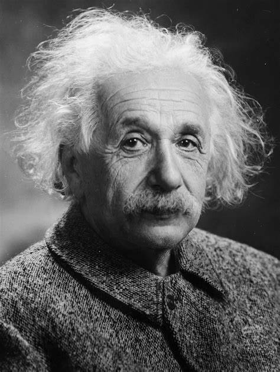

Einstein speaking at the dedication of the Pasadena Junior College (now PCC) astronomy building, February 1931. Courtesy of the Caltech Archives.
A time line of Albert Einstein:
1879 - Born in Ulm, in the Kingdom of Württemberg in the German Empire.
1895 - At the age of 16, Einstein took the entrance examinations for the Swiss Federal polytechnic school in Zürich (later the Eidgenössische Technische Hochschule, ETH). He failed to reach the required standard in the general part of the examination, but obtained exceptional grades in physics and mathematics.
1896 - He passed the Swiss Matura with mostly good grades, including a top grade of 6 in physics and mathematical subjects, on a scale of 1–6.
1900 - Passed the exams in Maths and Physics and was awarded a Federal teaching diploma.
1901 - Secured a job in Bern at the Swiss Patent Office, as an assistant examiner – level III.
1903 - His position at the Swiss Patent Office became permanent, although he was passed over for promotion until he "fully mastered machine technology".
1905 - Einstein completed his dissertation, A New Determination of Molecular Dimensions with Alfred Kleiner, serving as pro-forma advisor. His thesis was accepted in July of the same year.
1905 - has been called Einstein's annus mirabilis (amazing year), he published four groundbreaking papers, on the photoelectric effect, Brownian motion, special relativity, and the equivalence of mass and energy, which were to bring him to the notice of the academic world, at the age of 26.
1906 - Was awarded a PhD on January 15.
1908 - Was recognized as a leading scientist and was appointed lecturer at the University of Bern.
1911 - Became a full professor at the German Charles-Ferdinand University in Prague in April, accepting Austrian citizenship in the Austro-Hungarian Empire to do so.
1913 - Was enticed to move to Berlin with an offer that included membership in the Prussian Academy of Sciences, and a linked University of Berlin professorship, enabling him to concentrate exclusively on research.
1915 - Had successfully completed his general theory of relativity, which he used to calculate that deflection, and the perihelion precession of Mercury.
1919 - The deflection prediction was confirmed by Sir Arthur Eddington during the solar eclipse of 29 May. Those observations were published in the international media, making Einstein world-famous.
1920 - He became a Foreign Member of the Royal Netherlands Academy of Arts and Sciences.
1922 - Was awarded the 1921 Nobel Prize in Physics "for his services to Theoretical Physics, and especially for his discovery of the law of the photoelectric effect".
1933 - Einstein returned to the US and took up a position at the Institute for Advanced Study, noted for having become a refuge for scientists fleeing Nazi Germany.
1939 - a few months before the beginning of World War II in Europe, Szilárd and Wigner visited Einstein to explain the possibility of atomic bombs, which Einstein, a pacifist, said he had never considered.[146] He was asked to lend his support by writing a letter, with Szilárd, to President Roosevelt, recommending the US pay attention and engage in its own nuclear weapons research.
1940 - Einstein became an American citizen.
1946 - Einstein visited Lincoln University in Pennsylvania, a historically black college, where he was awarded an honorary degree.
1954 - Einstein said to his old friend, Linus Pauling, "I made one great mistake in my life—when I signed the letter to President Roosevelt recommending that atom bombs be made; but there was some justification—the danger that the Germans would make them ..."
1955 - Einstein and ten other intellectuals and scientists, including British philosopher Bertrand Russell, signed a manifesto highlighting the danger of nuclear weapons.
1955 - On April 17, Einstein experienced internal bleeding caused by the rupture of an abdominal aortic aneurysm, which had previously been reinforced surgically by Rudolph Nissen in 1948.
Read more about this amazing personality on Wikipedia